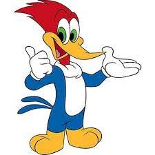
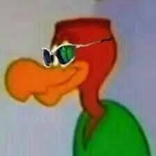
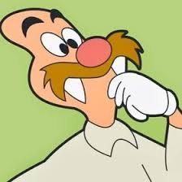
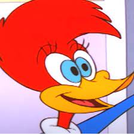
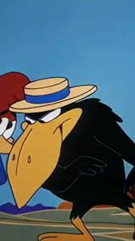

| Imagem | Personagem | Descrição |
|---|---|---|
|  | Pica-Pau | Pica-Pau (Woody Woodpecker): O protagonista travesso e astuto, conhecido por sua risada distintiva e seu jeito malandro. O Pica-Pau muitas vezes se envolve em travessuras e problemas, mas também mostra um coração bondoso em certas situações. |
|  | Zeca Urubu | Um vilão recorrente, geralmente retratado como um urubu gangster. Zeca Urubu está sempre tramando esquemas para tirar vantagem do Pica-Pau ou outros personagens.. |
|  | Leôncio | Ele é um personagem ingênuo e muitas vezes cai nas artimanhas do Pica-Pau. Leôncio é conhecido por sua personalidade atrapalhada e por ser facilmente enganado. Ele aparece em vários episódios, geralmente envolvido em situações cômicas com o Pica-Pau. |
|  | Winnie Woodpecker | Uma pica-pau fêmea e interesse amoroso ocasional do Pica-Pau. Winnie é retratada como inteligente e independente, às vezes rivalizando com o Pica-Pau em travessuras ou desafios. |
| Pe de pano | Pé de Pano é um cavalo branco com pernas traseiras de madeira, companheiro leal do Pica-Pau em suas aventuras. Ele é gentil, confiável e muitas vezes protagoniza momentos cômicos devido às suas pernas peculiares. | |
|  | Jubileu | Um corvo mal-humorado e meio burro, por cair na lábia do Pica-Pau. Apareceu no episódio "Os Azares de um Corvo" |
Para ver o trailer da temporada